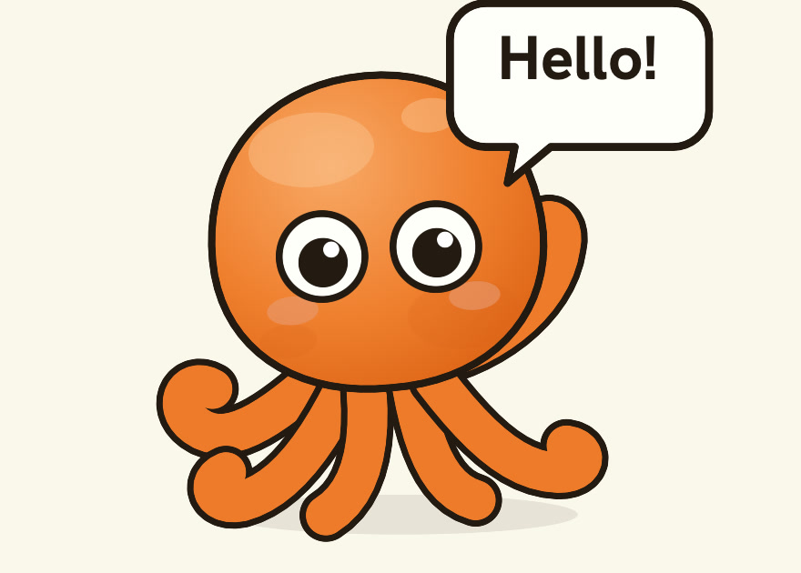

Your family's helper
Text Candice in iMessage. Your family’s personal data is handled on-device with Apple’s foundation model. Complex tasks go to Claude with masked PII.

Your family's privacy matters.
Memories are stored and searched on the Mac. Before a question goes to Claude, Apple's on-device model reads it on the Mac and hides the personal details it finds: names, phone numbers, emails, ID numbers, bank and card numbers, addresses, number plates, dates of birth and organisations.
Our latest test shows 98.65% of the personal details were hidden.1
- You to Candice: Your message
- Candice, on your Mac: Looks up the family's memories
- Candice to Apple's on-device model: Find the personal details
- Apple's on-device model to Candice: Names, numbers, addresses… foundFixed rules also check, and the family's names are always hidden.
- Candice to Claude, leaving your Mac: The question, with masked identity like ⟦PERSON_1⟧If the check fails, nothing is sent.
- Claude to Candice: An answer, still with masked identities
- Candice, on your Mac: Puts the real names back
- Candice to you: The answer
What the model sees
"did ⟦PERSON_1⟧ reply from ⟦EMAIL_1⟧ about the plumbing quote?"
What you see
"yep, Sam emailed back from sam@… this morning. the quote came in under budget."
A simple question, worked out properly.
Gigi asks how much paint a bedroom needs. The family and the question are made up. The answers are Candice's own. The notes beside the chat show what Candice remembered, how the sums were done, and where Candice stopped to ask.
Candice remembers
Months ago, Gigi mentioned that the hallway paint covers 12 m² per litre and comes in 2.5 litre tins. Here Gigi only says "same paint as last time", and Candice fills in the rest.
Candice shows the working out
Asked how many tins to buy, Candice did the sums step by step and said where the answer was tight:
- Walls 31.2 m². 13 m around the room, 2.4 m high.
- Gaps About 28 m² left. Roughly 3 m² off for the door and window.
- Coats About 4.7 litres. Two coats is about 56 m², at 12 m² per litre.
- Tins 2 tins, just. 5 litres covers 60 m², with only 0.3 litres spare.
- 3 tins once Gigi wants a margin: 7.5 litres, enough for about 90 m².
Candice asks before doing more
Candice says plainly that buying the paint is up to Gigi, then offers a reminder before Saturday and waits for an answer. Anything that reaches outside the house gets the same question first.
Candice asks first.
Anything that cannot be undone, like a deletion or unlocking a door, waits for a yes, and Candice spells out exactly what will happen first. Any adult in the house can text "Candice, stop" and everything pauses. Only the person who looks after Candice can start things again. Candice reads emails and web pages as information only. If one leads to an action, a person has to say yes first.
See the privacy steps"Want me to go ahead and book it?"
1 513 of 520 personal details were hidden, in messages Candice had never seen before. What was measured: 305 made-up household messages, like the ones a family sends Candice: 215 with personal details and 90 without, written for this test by a separately briefed AI writer who had not seen how Candice finds personal details. A detail counted as hidden only when all of it was hidden. Measured once, on the current version of Candice. Five earlier tests of the same kind scored between 96.7% and 98.7%. Candice also hides some harmless words. In 49 of 120 test sentences with no personal details, something was hidden anyway, often a place, a brand or a well-known name. ↩